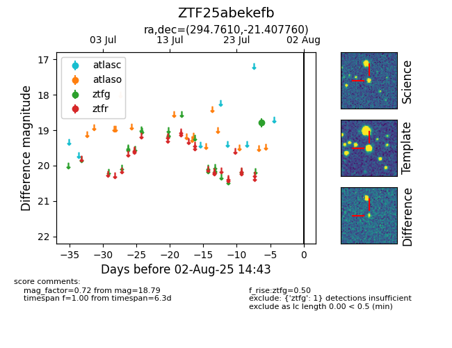

Target ZTF25abekefb at 2025-08-02 14:43, see:
FINK: fink-portal.org/ZTF25abekefb
Lasair: lasair-ztf.lsst.ac.uk/objects/ZTF25abekefb
ALeRCE: alerce.online/object/ZTF25abekefb
alt names
ZTF25abekefb (ztf,fink)
coordinates:
equatorial (ra, dec) = (294.7610,-21.40776)
galactic (l, b) = (18.3318,-19.71333)
photometry
last ztfg=18.79
1 ztfg detections
